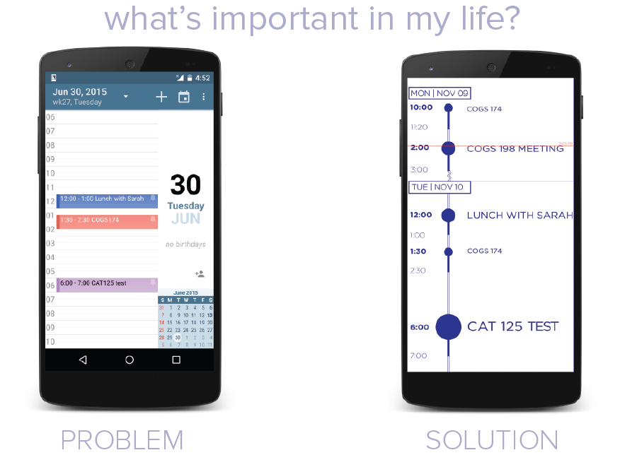

TIMELINE
mobile application that visualizes people's personal events better based on priority
research with Jim Hollan
We believe that Timeline will help users see what's important in their lives and therefore help them prioritize and manage their time better. People will make better decisions about what to pay attention to next by quickly knowing the priority of their events through Timeline, no matter the length of time. As a better visualizer of the importance of events, the Timeline serves as quicker and better reminders of the important events in users' lives.
challenge
Students work so hard for a brighter future, but how can they stay on top of doing the important things necessary to fulfill their dreams with their inconsistent schedules?
Students' schedules are often very inconsistent with numerous activities-- different meetings from sororities and clubs all at different times, having fun with their friends in the middle of the day, midterms and finals on different weeks. In the midst of all this, they are forgetting their long term goals and passions, the bright future that motivates them to handle the craziness. How can we help them be motivated with their craziness?
approach
We noticed that students had a hard time prioritizing and being motivated by what's personally important and what they're passionate about in their lives with their crazy schedules.
Therefore, we focused the product on simply visualizing importance. Current digital calendars do not fulfill this need.
In the traditional calendar view, an hour long interview with Apple and an hour long Psychology class are considered the same importance visually, even though we need to spend more time and attention preparing for the interview, a step to pursuing our dreams. Research also shows that to motivate people, they should focus on bigger goals and focus on how those tasks add up to their goals-- how can students be more effective with their inconsistent schedules to prioritize what's important?
process
How can we visualize what's important and takes priority in our lives?
We created wireframes and prototypes based on this problem and explored different solutions. We had even played around with the idea of a full calendar complete with suggesting times to work towards their long term goals, but we decided to keep our product simple, knowing that students aren't diligent in put non-important things into their schedules.


*prototypes done by Melinda Chu
user needs + design solutions
Based on preliminary user research on our wireframes and the limitations of the current calendar, we found what was important to users regarding their schedules.
Through our research, we decided to create design solutions to these user needs.

1
problem
Large empty spaces on calendars left users confused
solution
RELATIVE TIME** when there are no events
A huge pain point with some mobile calendars is large empty spaces when there are no events often leave the user confused about what's going on. With our use of relative time** (see below for an example), not every hour may not be represented by a set amount of space.
2
problem
Users need to easily and quickly see how much of their time they are free or busy
solution
FIXED TIME** in between events
Our solution was to use FIXED TIME** between events, where the set amount of space was determined by duration even though we included relative time for large empty spaces. Every hour is shown when there is fixed time, and users can accurately visualize the duration of events and time in between.
3
problem
Users need to visualizing duration of events to easily see how long an event is for scheduling
solution
colored tails to show duration
Our solution was to use a colored tailed for each event to give a gist of how long each event is, with less emphasis on the end time because the focus of our product is visualizing what's important.
4
problem
Visualizing what's important in an easy and fast way that will make a difference for the users
solution
uses SIZE to indicate importance
We decided to indicate importance with SIZE, so the user would see this event first. We attempted to use color to show importance, but it was not as good an indicator, and it made the design more convoluted.
** Relative vs. Fixed Time


success + value through research
We tested the differences between Timeline and the traditional calendar in what value each bring to people's lives by having users complete tasks after viewing one.
The dependent variables were time (how long each task took) and memory (what they remembered).
People remembered the important events more on Timeline
Our participants were more likely to name the important events when we tested them on what events they remembered from either Timeline or the traditional calendar.
Scheduling events took longer on Timeline
Due to the design of Timeline and our focus on importance, it was more difficult for the users to picture when to schedule an event. We found this to be the main downside to Timeline vs. the traditional mobile calendar, but we feel user research had led us to see a true need for seeing importance.
personal takeaways
Exploring Time and Data Viz with feedback from the best
This was a great way to further explore the subject of time and information visualization in the Cognitive Science realm. In the end, we presented our final presentation to Don Norman, Jim Hollan, and Scott Klemmer, and we got feedback on what each of them thought of this new idea. It was also great to see the intricacies with long term projects, and designing for all entire user flow and working together with a team on these.